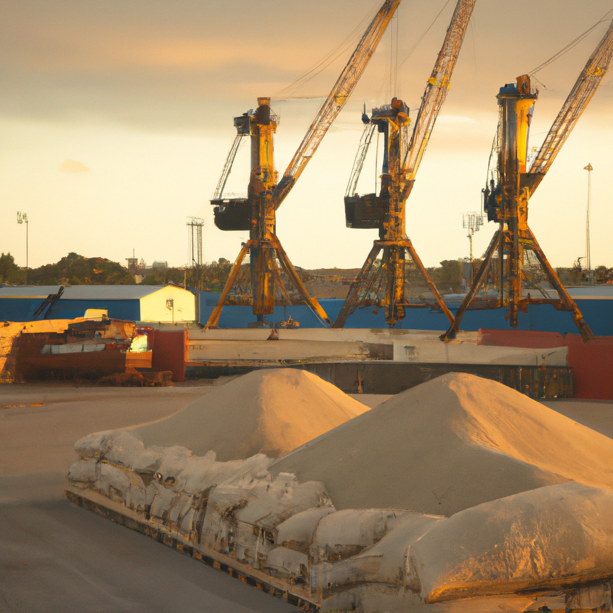
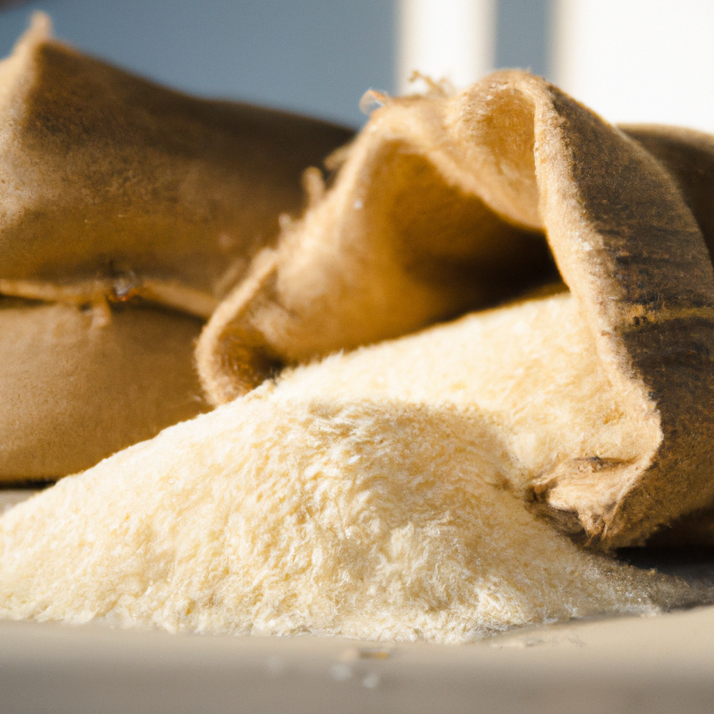
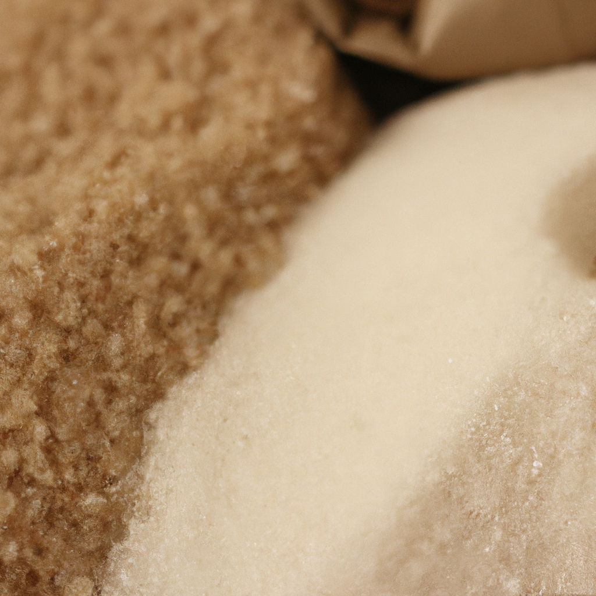
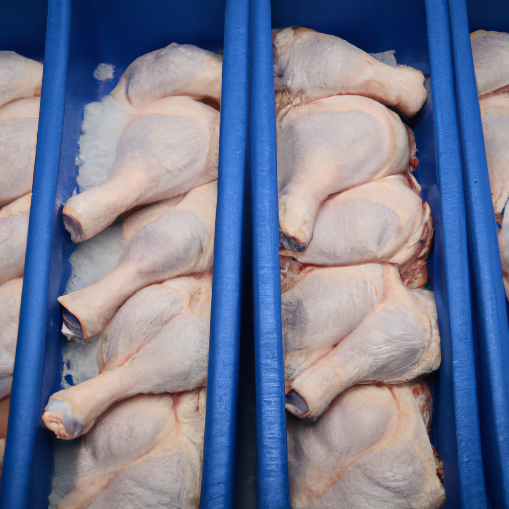
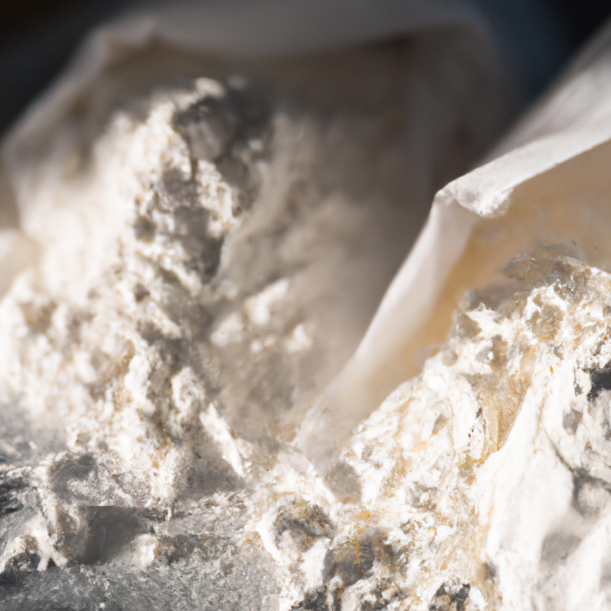
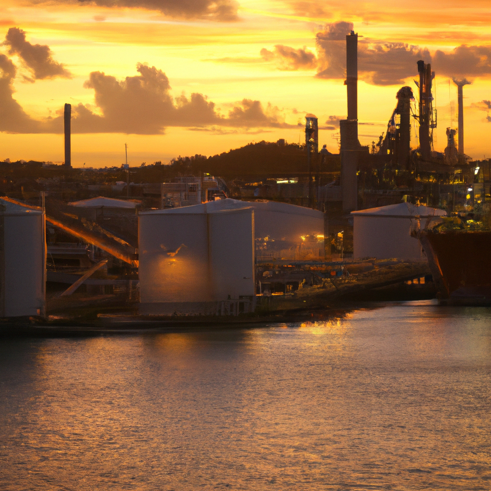

Diesel supplier Dominican Republic — CIF delivery of ULSD, rice, sugar, cooking oil, frozen poultry, and wheat flour to DP World Caucedo and Port of Haina.
Entrega CIF de arroz, azúcar, aceite, pollo congelado, diésel y harina de trigo a DP World Caucedo y Puerto de Haina.
The Dominican Republic is the largest economy in the Caribbean, with a population exceeding 10 million and a GDP driven by tourism, manufacturing, and agriculture. The country is a signatory to the CAFTA-DR trade agreement, which provides preferential tariff access for US-origin goods — making it one of the most accessible Caribbean markets for American exporters. Food imports are a critical part of the DR's supply chain: rice, wheat flour, and cooking oil are dietary staples consumed daily across the country, while sugar and frozen poultry support both household consumption and a vast hotel and restaurant sector. On the energy side, the DR's growing transportation fleet, power generation infrastructure, and free trade zone industrial operations drive substantial demand for imported ULSD diesel and gasoline. Over 70 free trade zones across the country attract foreign manufacturing investment, further increasing imports of fuel, raw materials, and industrial inputs.
La República Dominicana es la economía más grande del Caribe, con una población que supera los 10 millones de habitantes y un PIB impulsado por el turismo, la manufactura y la agricultura. El país es signatario del acuerdo comercial CAFTA-DR, que proporciona acceso arancelario preferencial para productos de origen estadounidense, convirtiéndolo en uno de los mercados caribeños más accesibles para los exportadores americanos. Las importaciones de alimentos son una parte crítica de la cadena de suministro de la RD: arroz, harina de trigo y aceite de cocina son alimentos básicos consumidos diariamente en todo el país, mientras que el azúcar y el pollo congelado abastecen tanto el consumo doméstico como el vasto sector hotelero y de restaurantes. En el ámbito energético, la creciente flota de transporte, la infraestructura de generación eléctrica y las operaciones industriales de zonas francas impulsan una demanda sustancial de diésel ULSD y gasolina importados. Más de 70 zonas francas en todo el país atraen inversión manufacturera extranjera, aumentando aún más las importaciones de combustible, materias primas e insumos industriales.
The Dominican Republic is the Caribbean's largest economy and one of Latin America's fastest-growing markets. With over 10 million people and a thriving tourism sector, the DR has substantial and growing demand for imported food staples and petroleum products. Vector Trade Capital serves DR importers with bulk commodities delivered CIF to Caucedo, Haina, and Puerto Plata.
La República Dominicana es la economía más grande del Caribe y uno de los mercados de más rápido crecimiento en América Latina. Con más de 10 millones de personas y un sector turístico próspero, la RD tiene una demanda sustancial y creciente de alimentos básicos y productos petroleros importados.
The Dominican Republic imports more than $20 billion in goods annually. Food and fuel represent the largest import categories. Rice is the country's primary staple grain, with annual imports exceeding 100,000 metric tons. The hotel and restaurant sector — driven by over 7 million annual tourists — creates additional demand for quality food commodities. DP World Caucedo, a modern deep-water port with free trade zone access, handles the majority of containerized imports, while the Port of Haina serves as the nation's traditional commercial gateway. Vector Trade Capital leverages direct shipping routes from the US Gulf Coast to deliver competitively priced CIF shipments to both ports.
La República Dominicana importa más de $20 mil millones en bienes anualmente. Los alimentos y el combustible representan las mayores categorías de importación. El arroz es el grano básico principal del país. El sector hotelero y de restaurantes, impulsado por más de 7 millones de turistas anuales, crea demanda adicional de productos alimenticios de calidad.





DP World Caucedo is one of the Caribbean's most modern container terminals, located 25 km east of Santo Domingo. It features deep-water berths capable of handling Post-Panamax vessels, over 1 million TEU annual capacity, and serves as a major transshipment hub connecting Caribbean, Central American, and South American trade routes. Its integrated free trade zone enables streamlined customs processing for food and fuel imports. Caucedo is our primary CIF delivery point for containerized rice, wheat flour, sugar, cooking oil, and frozen poultry shipments.
DP World Caucedo es una de las terminales de contenedores más modernas del Caribe, ubicada a 25 km al este de Santo Domingo. Cuenta con muelles de aguas profundas capaces de manejar buques Post-Panamax, capacidad anual de más de 1 millón de TEUs, y funciona como un importante centro de transbordo que conecta rutas comerciales del Caribe, Centroamérica y Sudamérica. Su zona franca integrada permite un procesamiento aduanero simplificado para importaciones de alimentos y combustible. Caucedo es nuestro principal punto de entrega CIF para envíos contenedorizados de arroz, harina de trigo, azúcar, aceite de cocina y pollo congelado.
Port of Haina (Rio Haina) is the Dominican Republic's traditional commercial gateway and the closest major port to Santo Domingo. It handles a significant share of the country's general cargo and bulk commodity imports, including rice, sugar, and wheat flour. Haina's petroleum terminal also receives diesel and gasoline shipments, making it a key entry point for fuel imports.
Puerto de Haina (Río Haina) es la puerta comercial tradicional de la República Dominicana y el puerto principal más cercano a Santo Domingo. Maneja una parte significativa de las importaciones de carga general y productos básicos del país, incluyendo arroz, azúcar y harina de trigo. La terminal petrolera de Haina también recibe embarques de diésel y gasolina, convirtiéndolo en un punto de entrada clave para importaciones de combustible.
Puerto Plata, on the northern coast, serves the Cibao region — the DR's agricultural heartland and a major population center. Puerto Plata provides an alternative entry point for food commodities destined for the northern provinces, reducing inland trucking costs from Santo Domingo. Additionally, the DR has dedicated fuel import terminals at Haina and Andrés (near Caucedo) that receive diesel and gasoline tanker shipments from US Gulf Coast refineries.
Puerto Plata, en la costa norte, sirve a la región del Cibao — el corazón agrícola de la RD y un importante centro poblacional. Puerto Plata proporciona un punto de entrada alternativo para productos alimenticios destinados a las provincias del norte, reduciendo los costos de transporte terrestre desde Santo Domingo. Además, la RD cuenta con terminales dedicadas de importación de combustible en Haina y Andrés (cerca de Caucedo) que reciben embarques de tanqueros de diésel y gasolina desde refinerías de la Costa del Golfo de EE.UU.

As a diesel supplier for the Dominican Republic, Vector Trade Capital delivers ULSD diesel and gasoline CIF to DP World Caucedo and the Port of Haina — the DR's two primary commercial ports. The Dominican Republic is the Caribbean's largest economy with over 10 million people, and its rapidly growing transportation, power generation, and industrial sectors create substantial and increasing demand for imported fuel. Our fuel supply to the Dominican Republic is sourced from U.S. Gulf Coast refineries with transit times of 4–6 days to Caucedo.
Como proveedor de diésel para la República Dominicana, Vector Trade Capital entrega diésel ULSD y gasolina CIF a DP World Caucedo y al Puerto de Haina.
The DR's tourism sector — hosting over 7 million visitors annually — drives additional fuel demand for hotel power generation, airport operations, and ground transportation. As a fuel supplier for the Dominican Republic, we work with national fuel importers, industrial consumers, and power utilities to provide scheduled fuel deliveries on competitive CIF terms. Every shipment includes independent quality inspection, certificates of quality and quantity, and full compliance documentation meeting DR-CAFTA import requirements.
El sector turístico de la RD impulsa demanda adicional de combustible para generación eléctrica hotelera, operaciones aeroportuarias y transporte terrestre.
Learn more about our fuel products and CIF delivery capabilities on our Caribbean fuel supply page, or download our Caribbean Import Playbook for a complete guide to fuel procurement in the Caribbean.
Conozca más sobre nuestros productos en nuestra página de combustible o descargue nuestro Playbook de Importación.
DP World Caucedo is the Dominican Republic's premier deep-water container port, located 25 kilometers east of Santo Domingo. The terminal handles over 1 million TEUs annually and operates within a free trade zone, enabling streamlined customs clearance for bulk food and fuel imports. As a diesel supplier for the Dominican Republic, Vector Trade Capital delivers ULSD and gasoline CIF to Caucedo with transit times of 4–6 days from Houston and as few as 3 days from Miami. Caucedo's modern infrastructure includes deep-water berths accommodating large tankers and container vessels, temperature-controlled storage for frozen poultry, and direct highway access for inland distribution.
DP World Caucedo es el principal puerto de contenedores de aguas profundas de la República Dominicana, ubicado a 25 kilómetros al este de Santo Domingo. La terminal maneja más de 1 millón de TEUs anuales dentro de una zona franca.
The Port of Haina, located west of Santo Domingo, is the Dominican Republic's traditional commercial port and handles a significant share of the country's bulk commodity imports. Haina's petroleum terminal receives diesel and gasoline shipments, while its general cargo facilities manage rice, sugar, wheat flour, and cooking oil imports. For importers requiring delivery to the northern coast, Puerto Plata provides an additional entry point serving the Cibao Valley — the DR's agricultural heartland and a growing fuel consumption market. Vector Trade Capital delivers CIF to all three Dominican Republic ports.
El Puerto de Haina, ubicado al oeste de Santo Domingo, es el puerto comercial tradicional de la RD. Su terminal petrolera recibe embarques de diésel y gasolina, mientras sus instalaciones de carga general manejan importaciones de arroz, azúcar, harina y aceite. Puerto Plata sirve como punto de entrada adicional para la costa norte.
Importing bulk commodities to the Dominican Republic involves letters of credit, CIF contract structuring, and compliance with CAFTA-DR documentation requirements. Vector Trade Capital guides DR importers through every step. Learn how letters of credit work for Caribbean commodity transactions in our Letters of Credit in Caribbean Trade guide. For a complete overview of the CIF delivery process — from pricing to port discharge — read our CIF Delivery to the Caribbean article. Our Caribbean Import Playbook covers the full import workflow including documentation, payment terms, logistics, and compliance for food and fuel shipments to the DR and across the Caribbean.
La importación de productos básicos a la República Dominicana involucra cartas de crédito, estructuración de contratos CIF y cumplimiento con los requisitos documentales del CAFTA-DR. Vector Trade Capital guía a los importadores dominicanos en cada paso. Aprenda cómo funcionan las cartas de crédito para transacciones de commodities en el Caribe en nuestra guía Cartas de Crédito en el Comercio Caribeño. Para una visión completa del proceso de entrega CIF, lea nuestro artículo sobre Entrega CIF al Caribe. Nuestro Playbook de Importación Caribeña cubre todo el flujo de importación incluyendo documentación, términos de pago, logística y cumplimiento para envíos de alimentos y combustible a la RD y todo el Caribe.
We supply bulk parboiled rice, ICUMSA 45 sugar, soybean and palm cooking oil, wheat flour, legumes, and USDA-inspected frozen chicken to DR importers with CIF delivery to Caucedo and Haina.
Suministramos arroz parbolizado, azúcar ICUMSA 45, aceite de cocina, harina de trigo, legumbres y pollo congelado inspeccionado por USDA con entrega CIF a Caucedo y Haina.
We deliver CIF to DP World Caucedo, Port of Haina, and Puerto Plata. Caucedo is our primary destination due to its modern container handling facilities and free trade zone access.
Entregamos CIF a DP World Caucedo, Puerto de Haina y Puerto Plata. Caucedo es nuestro destino principal por sus instalaciones modernas y acceso a zona franca.
We supply ULSD diesel and unleaded gasoline from US Gulf Coast refineries with CIF delivery to Dominican Republic ports. All shipments include certificates of quality and quantity.
Suministramos diésel ULSD y gasolina sin plomo desde refinerías de la Costa del Golfo con entrega CIF a puertos de la RD.
Transit from Houston or Miami to Caucedo is typically 4–6 days. Miami-origin shipments can arrive in as few as 3 days depending on carrier schedules.
El tránsito desde Houston o Miami a Caucedo es típicamente de 4 a 6 días. Los envíos desde Miami pueden llegar en solo 3 días.
We primarily supply bulk rice in 25kg and 50kg bags for wholesale distribution. Custom packaging options may be available for large-volume orders — contact us for details.
Principalmente suministramos arroz en sacos de 25kg y 50kg para distribución mayorista. Opciones de empaque personalizado pueden estar disponibles para pedidos de gran volumen.
Yes. Vector Trade Capital is a bulk rice supplier for the Dominican Republic, delivering parboiled and long-grain white rice CIF to DP World Caucedo and Port of Haina. We source US-origin and South American rice in 25kg and 50kg bags for wholesale distribution. CAFTA-DR preferential tariff rates apply to qualifying US-origin rice shipments.
Sí. Vector Trade Capital es un proveedor de arroz a granel para la República Dominicana, entregando arroz parbolizado y de grano largo blanco CIF a DP World Caucedo y Puerto de Haina. Suministramos arroz de origen estadounidense y sudamericano en sacos de 25kg y 50kg. Las tarifas preferenciales del CAFTA-DR aplican a envíos de arroz de origen estadounidense que califiquen.
Yes. Caucedo is our primary delivery point in the Dominican Republic. We deliver rice, wheat flour, sugar, cooking oil, frozen poultry, and ULSD diesel CIF to DP World Caucedo with transit times of 4–6 days from Houston and as few as 3 days from Miami. Caucedo's free trade zone and modern deep-water berths make it the most efficient entry point for containerized food and fuel imports.
Sí. Caucedo es nuestro principal punto de entrega en la República Dominicana. Entregamos arroz, harina de trigo, azúcar, aceite de cocina, pollo congelado y diésel ULSD CIF a DP World Caucedo con tiempos de tránsito de 4–6 días desde Houston y tan solo 3 días desde Miami. La zona franca y los muelles de aguas profundas de Caucedo lo convierten en el punto de entrada más eficiente para importaciones contenedorizadas.
Yes. We supply bulk wheat flour in 25kg and 50kg polypropylene bags for the DR's commercial baking, food processing, and food service sectors. Flour is sourced from established US and South American mills in all-purpose, bread, and pastry grades, and delivered CIF to Caucedo or Haina with phytosanitary certificates and full CAFTA-DR documentation.
Sí. Suministramos harina de trigo a granel en sacos de polipropileno de 25kg y 50kg para los sectores de panadería comercial, procesamiento de alimentos y servicio de alimentos de la RD. La harina se obtiene de molinos establecidos en EE.UU. y Sudamérica en grados de uso general, pan y repostería, y se entrega CIF a Caucedo o Haina con certificados fitosanitarios y documentación completa del CAFTA-DR.
Request CIF pricing for food or fuel delivery to Caucedo, Haina, or any Dominican Republic port.
Solicite precios CIF para entrega de alimentos o combustible a Caucedo, Haina o cualquier puerto dominicano.
Submit a request for quote in four steps: choose your product category, specify grade and volume, select a Dominican Republic discharge port — Caucedo, Haina, Puerto Plata, San Pedro de Macorís, or Boca Chica — and set your Incoterm and timeline. We supply bulk wheat flour, parboiled rice, cooking oil, ICUMSA 45 sugar, frozen poultry, ULSD diesel, and gasoline to Dominican importers with 4–6 day transit from the US Gulf Coast. All shipments include complete export documentation — commercial invoices, bills of lading, certificates of origin, and phytosanitary certificates. Trade finance is available for qualified buyers including letters of credit and documents against acceptance.
Envíe una solicitud de cotización en cuatro pasos: elija su categoría de producto, especifique grado y volumen, seleccione un puerto de descarga en la República Dominicana — Caucedo, Haina, Puerto Plata, San Pedro de Macorís o Boca Chica — y configure su Incoterm y plazo. Suministramos harina de trigo a granel, arroz precocido, aceite de cocina, azúcar ICUMSA 45, pollo congelado, diésel ULSD y gasolina a importadores dominicanos con tránsito de 4–6 días desde la Costa del Golfo. Financiamiento comercial disponible para compradores calificados.
Request a Quote Solicitar Cotización